| 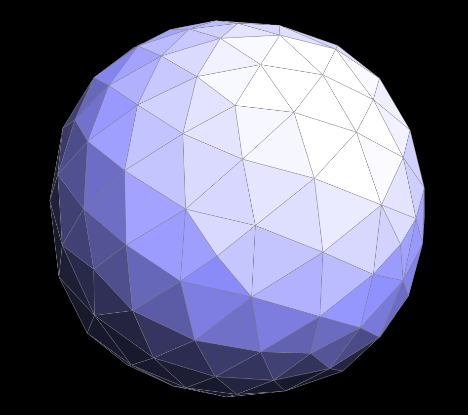 | 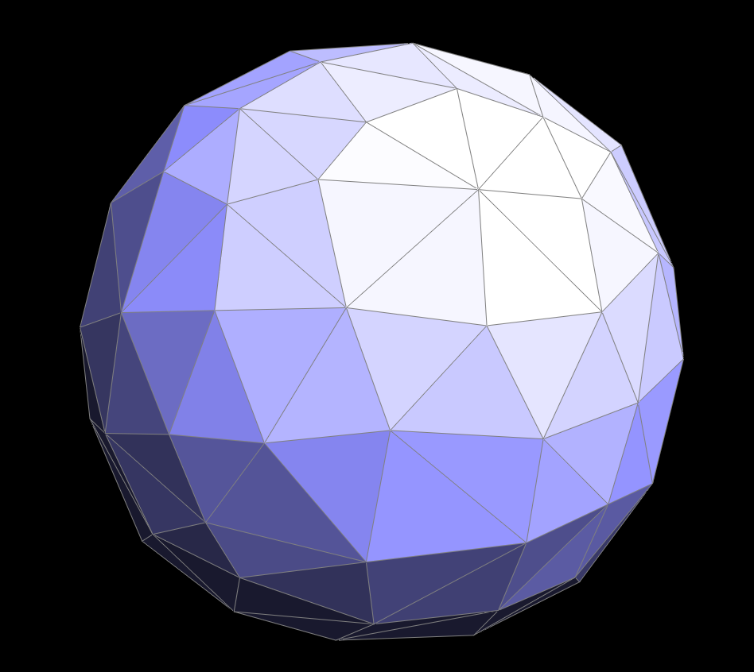 | 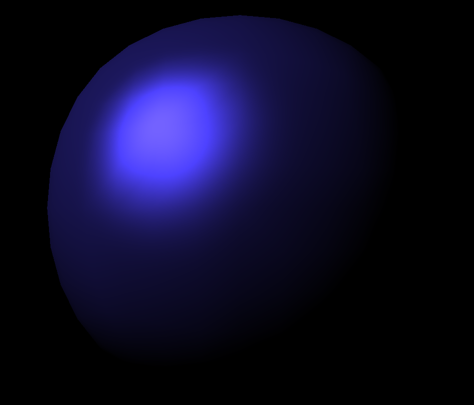 |
Triangular meshes are ubiquitous in the world of graphics, used in diverse applications from 3D modeling to video game development. Thus, the ability to manipulate meshes to fit one's needs -- whether they are performance or detail oriented -- is paramount. With that in mind, we decided to unlock more of our existing mesh code's potential by implementing a diverse set of functionality: edge collapse, remeshing, mesh simplification, alternate upsampling, and new shaders.
This is the main problem that our project will attempt to address--modifying mesh models in a way that reduces the various costs associated with their use. The two methods for doing this we will employ are remeshing and mesh simplification. Remeshing is the act of modifying the mesh such that the triangles that make it up are near-equilateral and have similar areas. This makes the process of editing the mesh more efficient and allows algorithms on the mesh to be more robust. Mesh simplification revolves around simplifying the mesh, which makes most operations on the mesh more efficient because it is less complex. This can be a difficult process, because the algorithm should ideally preserve as much detail of the original mesh as possible.
For our project, we plan to integrate these two process along with an alternative upsampling scheme, Sqrt(3)-Subdivision, into the Mesh Editing software developed in Homework 2. To assist in developing our algorithms, we intend to use the following papers: Remeshing and Surface Simplification and Sqrt(3)-Subdivision
In addition, we also included two new shaders to Meshedit with our project. The first shader we included was a non-photorealistic cel shader which attempts to emulate images seen in cartoons or in comic books. The other shader we included was a Cook-Torrance shader. This shader attempts to simulate physical reality much closer than our previously implemented Phong Shading Model.
| Command | Key |
|---|---|
| Flip the selected edge | F |
| Split the selected edge | S |
| Upsample the current mesh using Loop Subdivision | U |
| Downsample the current mesh | Z |
| Remesh the current mesh | X |
| Upsample the current mesh using Sqrt(3) Subdivision | 3 |
| Toggle information overlay | I |
| Select the next halfedge | N |
| Select the twin halfedge | T |
| Collapse the selected edge | C |
| Switch to GLSL shaders | W |
| Switch between GLSL shaders | 0-5 |
| Toggle using area-averaged normals | Q |
| Recompile shaders | R |
| Reset camera to default position | SPACE |
| Edit a vertex position | (click and drag on vertex) |
| Rotate camera | (click and drag on background, or right click) |
Using Meshedit of the CMU graphics class as a reference and the Halfedge data structure, we approached implementing Edge Collapse by keeping track of and correctly setting all pointers. These included the neighbor pointers (next, twin, edge, vertex, face) for all Halfedges, as well as the single Halfedge pointers for each face, edge and vertex. Our step-by-step approach can be summarized as follows:
There were two caveats to this process: first, boundary edges cannot be safely collapsed without violating the manifold-ness of the mesh, so we would return an empty VertexIter() in that case without modification. Second, certain conditions of geometry had to met before we could safely collapse; this was a completely independent process from checking pointers and in fact required usage of these geometry principles:
These geometry conditions weren't actually mentioned in the CMU page, but were still crucial to maintaining manifold-ness after multiple collapses (especially on more complex meshes and mesh operations). Otherwise, our approach differed little from theirs, mostly because this was a fundamental operation with not a lot of freedom for other ways of implementation.
We immediately encountered problems with pointers, either from incorrectly or neglecting setting them; this would result in nasty segfaults, or cause gaping holes to appear after successive collapses. Eventually we solved this by cleverly reducing the number of pointers we had to keep track of, since not all pointers needed to be set in order to make it work (e.g. the vertices on the outer perimeter of the neighborhood didn't need to be assigned anything at all). By being more surgical with our pointer assignments, it was easier to debug and ultimately pinpoint which pointers needed to be set in order to avoid the problems altogether.
Other problems arose when collapse had to be used in conjunction with other code (see below, edge collapse is foundational for both remeshing and simplification), mostly involving iteration and malloc errors; we solved these by handling cases where our iterators might run over already deleted elements, specifically by comparing the number of elements before and after one edge collapse.
|
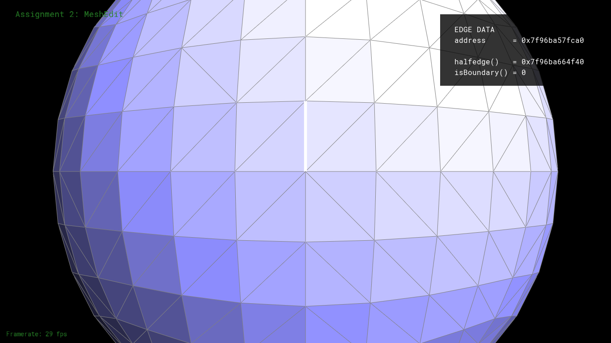
|
|
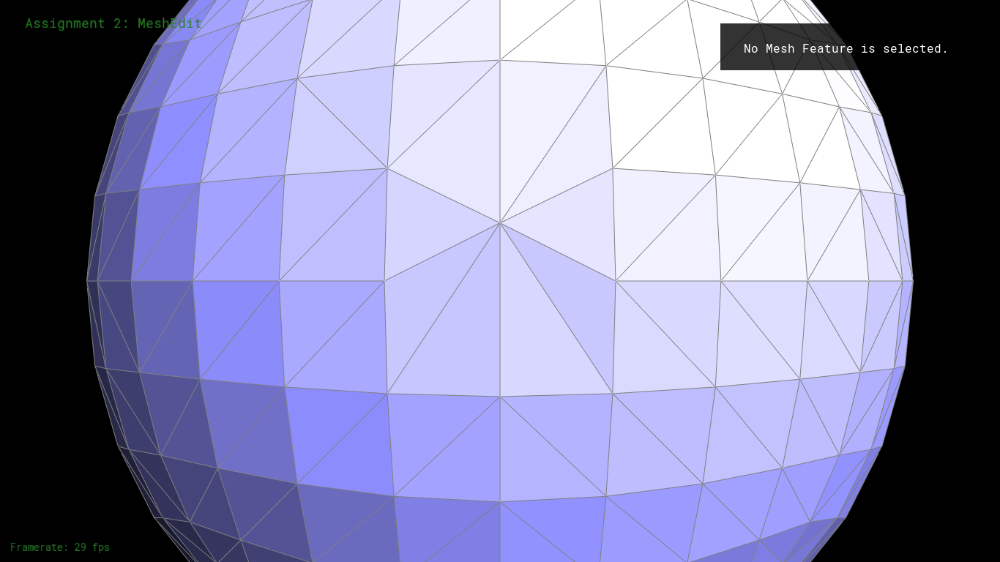
|
For remeshing, our approach was based on the paper here. At a simple level our algorithm was the following:
The main issue we ran into with remeshing involved edge collapse. Collapsing edges as we iterated through the list of edges proved to be very prone to errors since collapsing one edge deletes three edges from the mesh. We eventually solved this by modifying our iterator in the case of a collapse so that we would not accidentally iterate over a no longer valid edge.
|
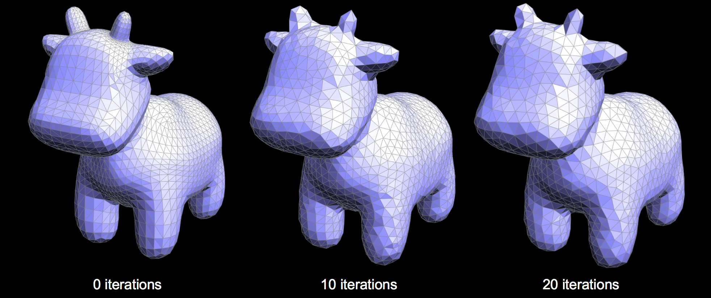
|
|
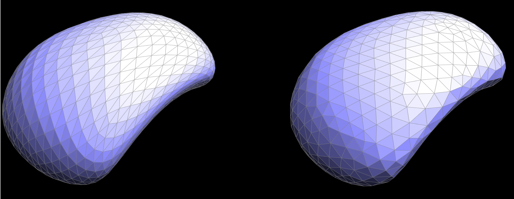
|
|
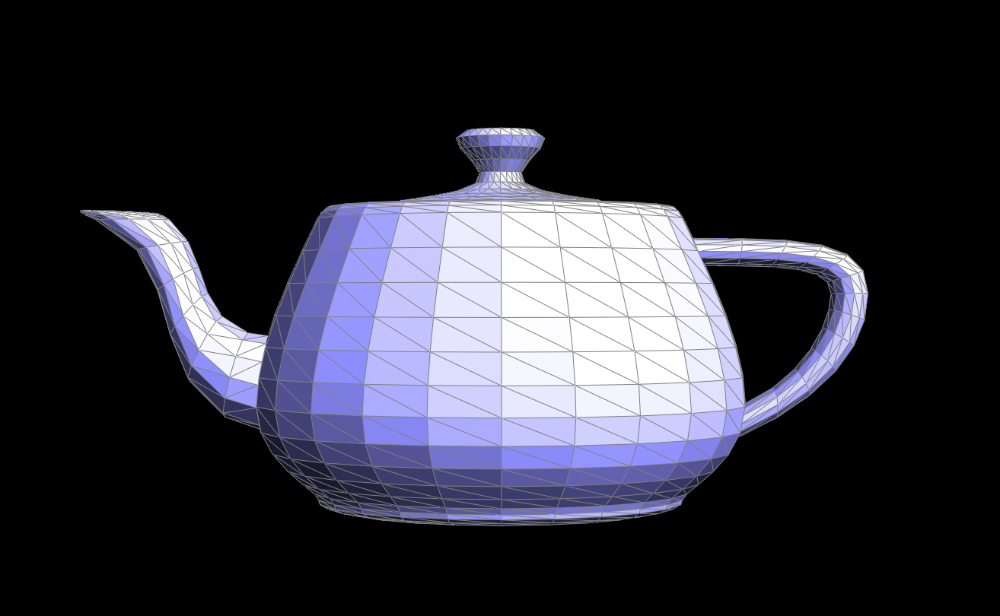
|
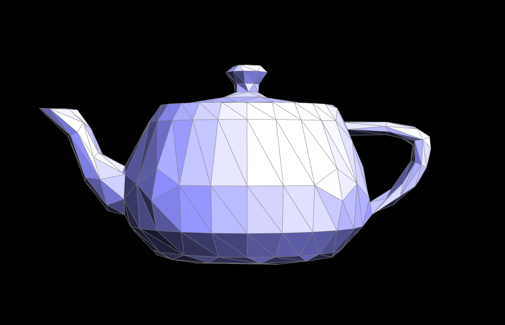
|
The main idea behind Mesh Simplification is to develop a technique to systematically collapse edges within our mesh until we reach a target number of triangles while maintaining as much of the features of the original figure as possible. Our implementation of Mesh Simplification, described by CMU Meshedit , used a Quadric Error Matrix to define the distance of a given vertex from the original surface plane.
Using this metric, we were able to calculate the new optimal point that minimized quadric error after each edge collapse. Our algorithm then used a greedy approach to collapse edges based on the minimum quadric error. In order to efficiently keep track of the best edges to collapse, our implementation utilized a PriorityQueue, in which we place each EdgeRecord, a class that contained all relevant details about a given edge. The algorithm to initialize each EdgeRecord is as described:
Our overall downsampling routine followed an algorithm similar to the following:
The main problem that we encountered during our implementation of Mesh Simplification was the dependence of our algorithm upon our previously implemented EdgeCollapse function. This led to situations where debugging became difficult due to the fact that we were unsure if the source of our bug lived in our implementation of simplification or in our implementation of EdgeCollapse.
The interesting thing to observe with the results of our Mesh Simplification algorithm is the clear tradeoff with the shape and detail of our figure with each iteration of our algorithm. In the case of our cow figure, simplifying our mesh more than twice barely makes the figure recognizable!
|
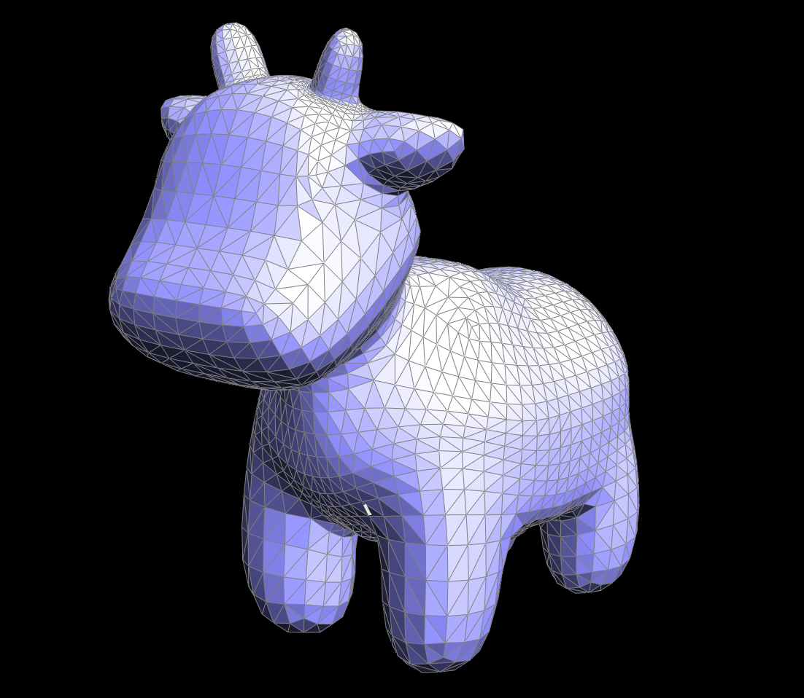
|
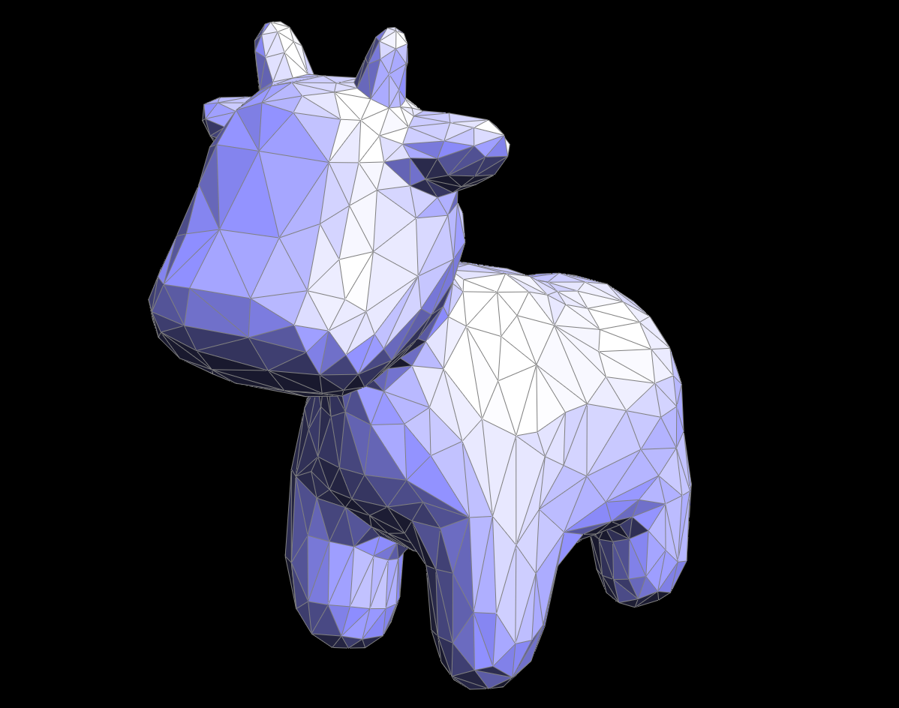
|
|
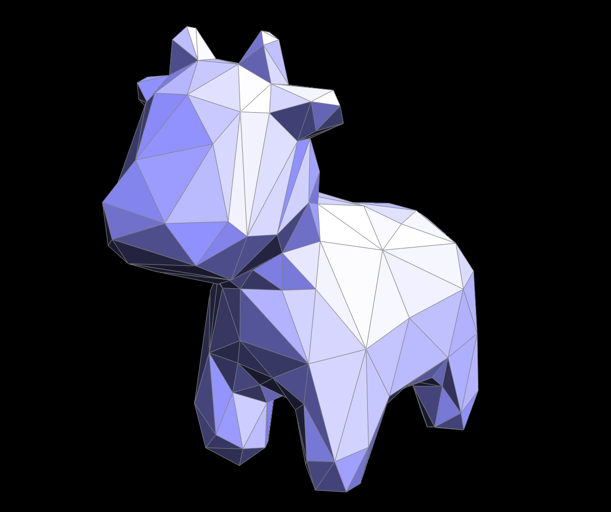
|
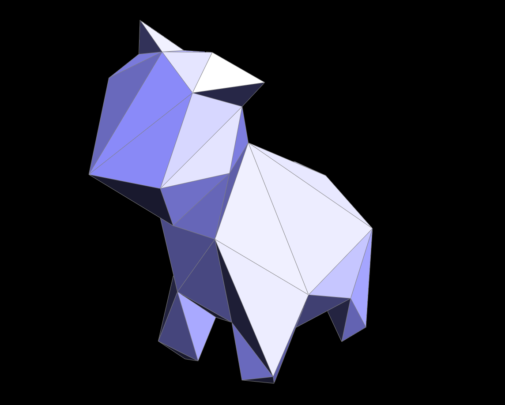
|
For sqrt(3) upsampling, we modeled our algorithm after the paper here. At a glance, sqrt(3) upsampling takes every triangle in the mesh and splits it into 3. To accomplish this we designed our algorithm as follows:
|
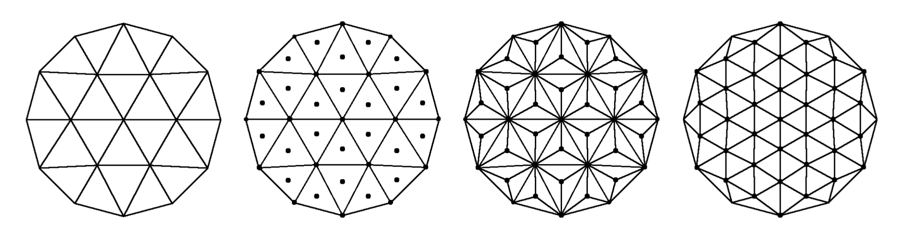
|
We weren't able to get the smoothing algorithm working correctly in time, leading to a very bumpy surface. This is especially noticeable in the second run of sqrt(3) subdivision.
|
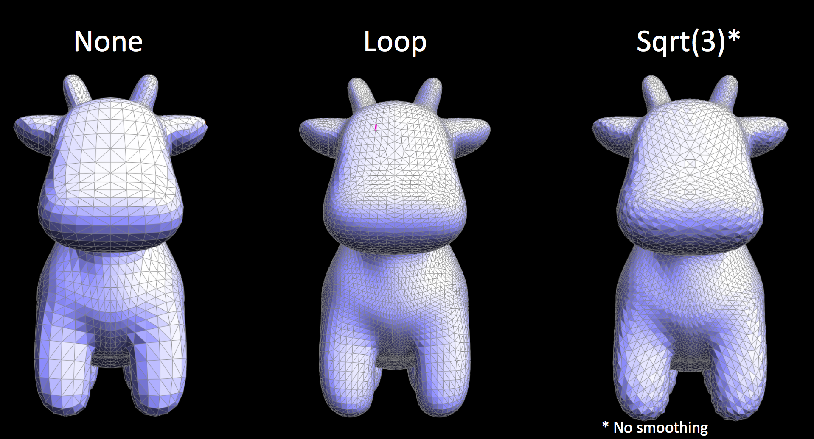
|
|
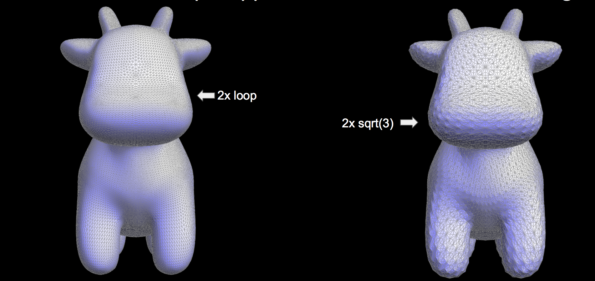
|
Beyond the simply augmenting our Mesh software, with additional features like Remeshing and Mesh Simplification, our group also decided to include additional shaders to make our meshes more aesthetically pleasing. The two shaders that we implemented were Cel Shading and Cook-Torrance shading. Cel shading, also known as cartoon shading, is a shading model used to take 3D meshes and visualize them as a flat 2D surface, similar to a comic book. Cook-Torrance shading is a shading model developed by Robert Cook and Kenneth Torrance that aims to simulate physical reality more closely than models like Phong Shading. Cook-Torrance shading emulates different material surfaces by treating each surface as being comprised of many different microfacets.
In order to implement Cel Shading, the first thing that had to be accomplished was to capture the intensity of light at a given surface position along the figure. This was accomplished by calculating the dot product between the light vector and the normal vector. The figure below depicts how light impacts a surface and the intensity can be calculated:
After calculating the intensity value, the next part of the implementation involves dividing up the surface of the figure based upon how much light is reaching that area and then including the appropriate color shader. For example, the area where the light directly hits the surface of the mesh is significantly lighter than the surface of the mesh that is pointing away from the light. The figure below depicts the main idea behind this implementation:
The clip above demonstrates how cel shading works with respect to the light intensity at different points. An interesting point to note is how the shader adapts as the figure is rotated about. The images below depict other figures that are using the cel shader.
|
|
|
The images below highlight the differences between phong shading and cel shading. With phong shading, the shader accentuate the three-dimensionality of the figure. In the case of cel shading, the figure appears to be a flat surface almost as if it were cut and pasted out of a comic book.
|
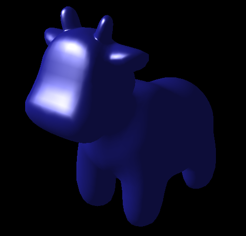
|
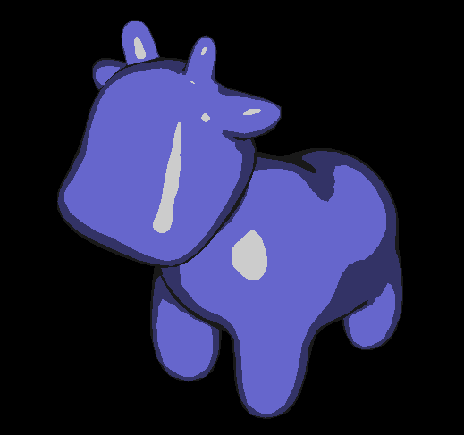
|
The implementation of Cook-Torrance shading consisted of three main components: Fresnel factor, Roughness (microfacet distribution), and Geometrical attenuation.
The Fresnel factor defines what proportion of incoming light that is reflected and transmitted. Since it is rather computationally expensive to compute this, we can use Shlick's approximation for this calculation.
Another component of the Cook-Torrance shading model is the Roughness factor. This factor defines the proportion of microfacets whose normal vectors point the same direction as the halfway vector v. On smooth surfaces that have a low roughness factor, all microfacets orient in the same direction which causes all reflected light to be closer to the reflection vector. On rough surfaces, since the microfacets are oriented in different ways, the light is diffused throughout the surface of the object. In my implementation of the roughness factor, I used Beckman's distribution function as depicted below to calculate the distribution.
The third component of the Cook-Torrance shading model is Geometric Attenuation. Geometric Attenuation defines how light may be affected entering or exiting the surface of the object. More specifically, this component models how some of the microfacets may block incoming light before it reaches the surface of the object or how reflected light may be blocked on its way out. ligSome of the microfacets block the incoming light before reaching the surface or after being reflected. The geometrical attenuation factor represents the total amount of light that is left after these processes are taken into consideration. In the formula below, we calculate the geometric attenuation factor as a minimum of three values. The first value is the case when the microfacets do not affect the light. The second value is the case when reflected light is blocked. The third value is the case when light is blocked before it reaches the next microfacet.
Similar to the Phong shading model, the Cook-Torrance model also contains ambient, diffuse, and specular reflection. After all three of the components described above are calculated, we can utilize the formulas specified below to calculate the reflection of our object
The images below demonstrate the difference between Phong Shading and Cook-Torrance Shading. It is definitely evident by observation that the Cook-Torrance Shading Model appears to emulate physical reality more closely than the Phong Shading Model. The point on the surface where light hits in the Cook-Torrance shading model appear glossy, giving the Torus on the right more of a metallic feel. On the other hand, the Phong Shading model appears to be a lot more artificial in terms of its surface reflection, giving the Torus on the left more of a plastic feel.
|
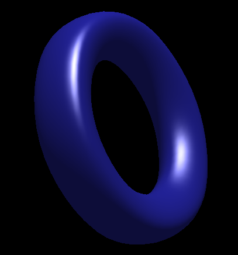
|
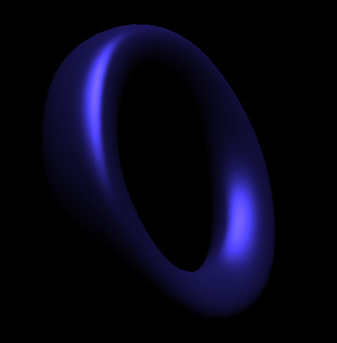
|
Another interesting aspect of the Cook-Torrance Shading Model is the fact that the roughness value can be adjusted to produce differing images. In the image on the left, the roughness value is equal to 0.3, indicating that the surface of the teapot is very smooth. In the image on the right, the roughness value is equal to 0.8, indicating that the surface of the teapot is very rough. The smooth teapot reflects light closer to the reflection vector; whereas, the rough teapot has more distributed light giving the surface more of a matte look.
|
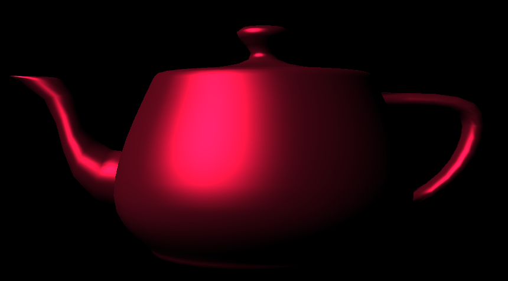
|
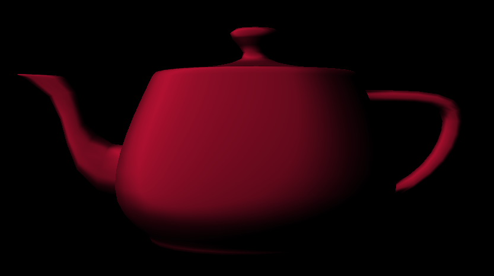
|
Our final project required a lot of work but at the end of the day it was incredibly rewarding. After implementing so many different Mesh augmentations we've gotten a good grasp of how meshes work and how equally useful and horrific the HalfEdge data structure can be. In one of the early portions of our assignment, we found ourselves struggling with the implementation of Edge Collapse. The main takeaway from this modest but crucial part was simplicity: while our collapse code initially contained 200+ lines of code, we were later able to reduce this to less than 100. This was after spending time thinking about the special ways to take care of pointer assignments when certain elements were bound to be deleted. We chose to change as little pointers as possible and this proved to be the better approach. In order to create the different shaders, we had to familiarize ourselves with the different with glsl and understand how a fragment shader works. Specifically with the Cook-Torrance model, we were introduced to the many different nuances of lighting models and how complicated it can be to model light as it functions in the real world.
We definitely enjoyed working on this project and hope you enjoyed reading about our work as well!
Nag: Implemented edge collapse with Kenny, Mesh Simplification, Cel Shading, and Cook-Torrance Shading
Kenny: Implemented edge collapse with Nag and remeshing with Tim
Tim: Implemented remeshing with Kenny, implemented Sqrt(3) subdivision